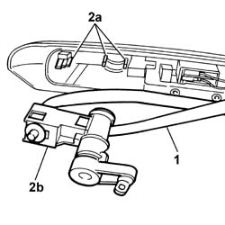
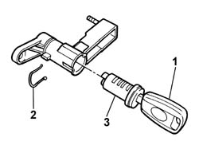

7015B34 lock block - r+r with handle or support removed
- Path
- Procedures > 70 FITTINGS > 7015 TAILGATE/ > 7015B tailgate locking/opening devices > 7015B34 lock block - r+r with handle or support removed
- Kind
- repair procedure (removal / refitting; the operation number is the code)
- Applies to
- all engines; all production periods
- Interactive page
- https://sloeber94.github.io/elrnDB-fPnd/en/#/2753128
Applies to: all engines; all production periods
 Removing
Removing
 Refitting
Refitting1. Partly release the seal.
2. Adjust the fastening clips (2a) and remove the lock barrel support (2b).

Applies to: all engines; all production periods
1. Insert the ignition key in the lock barrel.
2. Remove the retaining clips.
3. Extract the lock barrel.

Applies to: all engines; all production periods
Refitting
RemovingFit the lock barrel in the support and secure it using the special fastening clip.
Remove the ignition key.
Place the lock barrel support in the housing in the exterior handle.